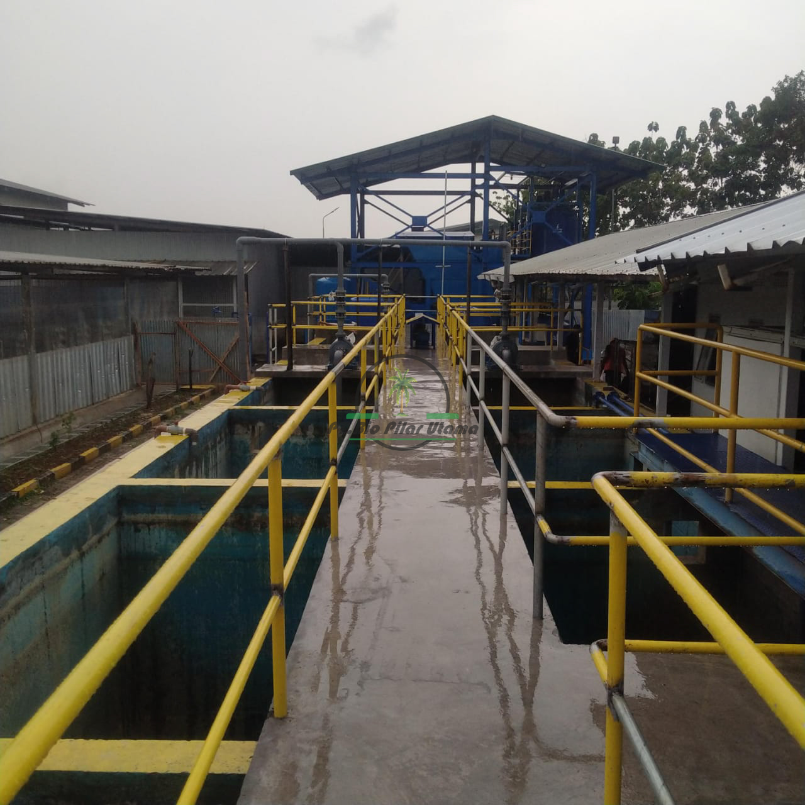
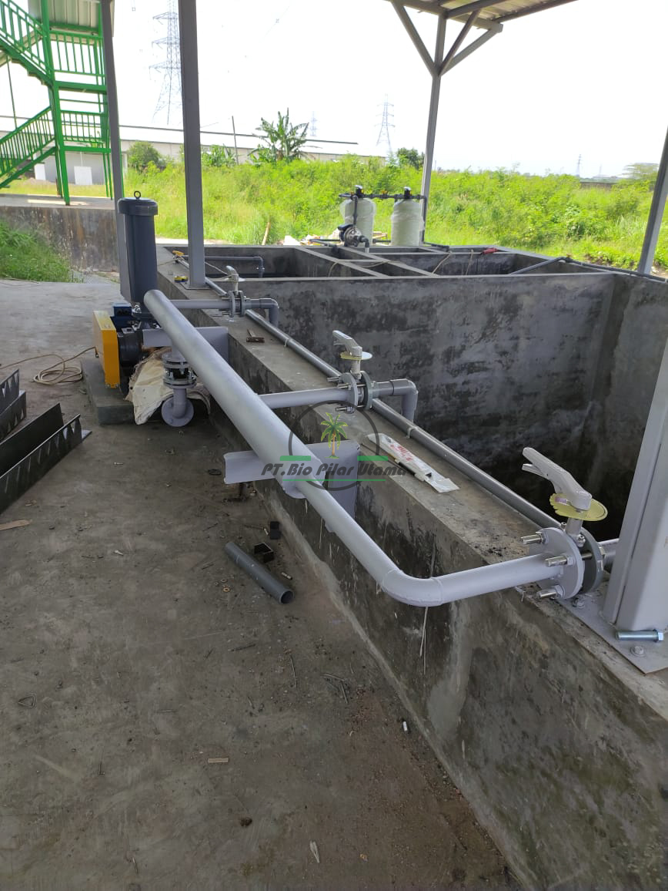
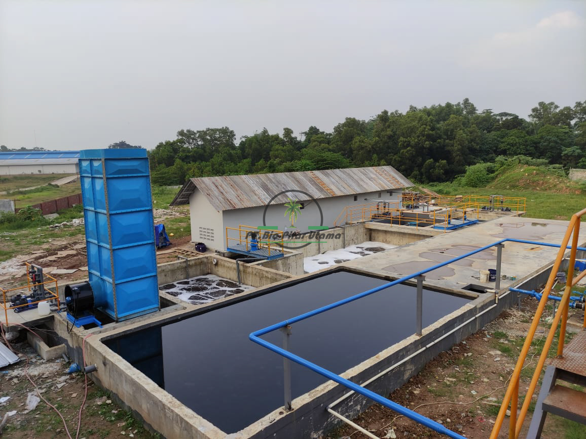
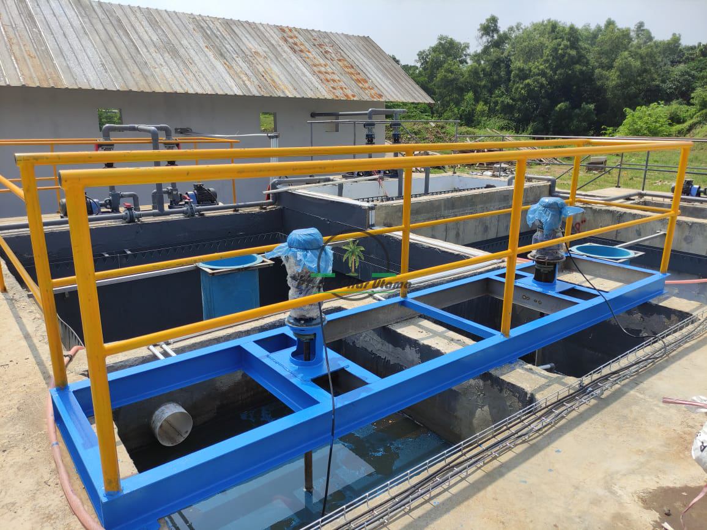
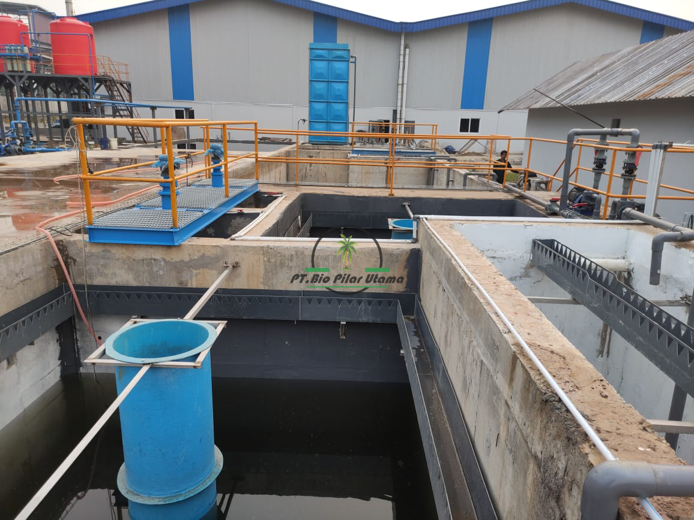
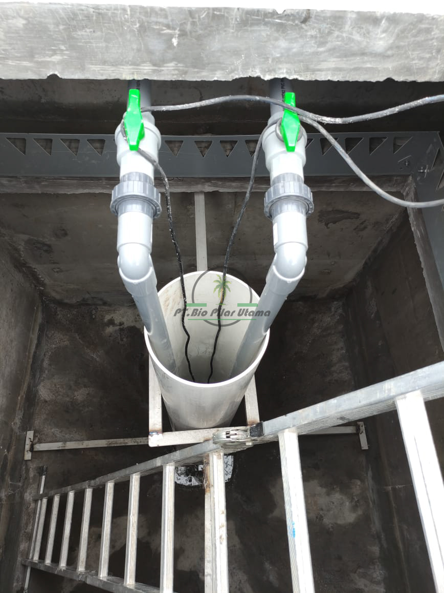
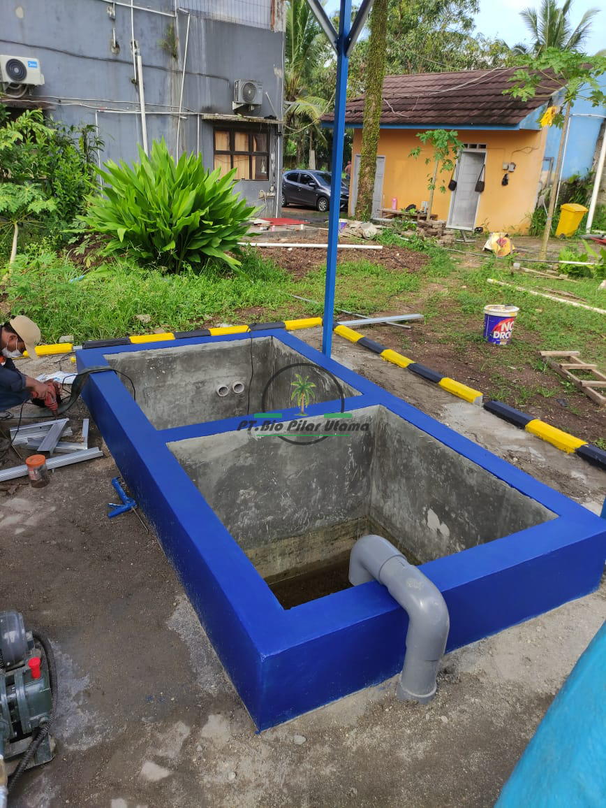
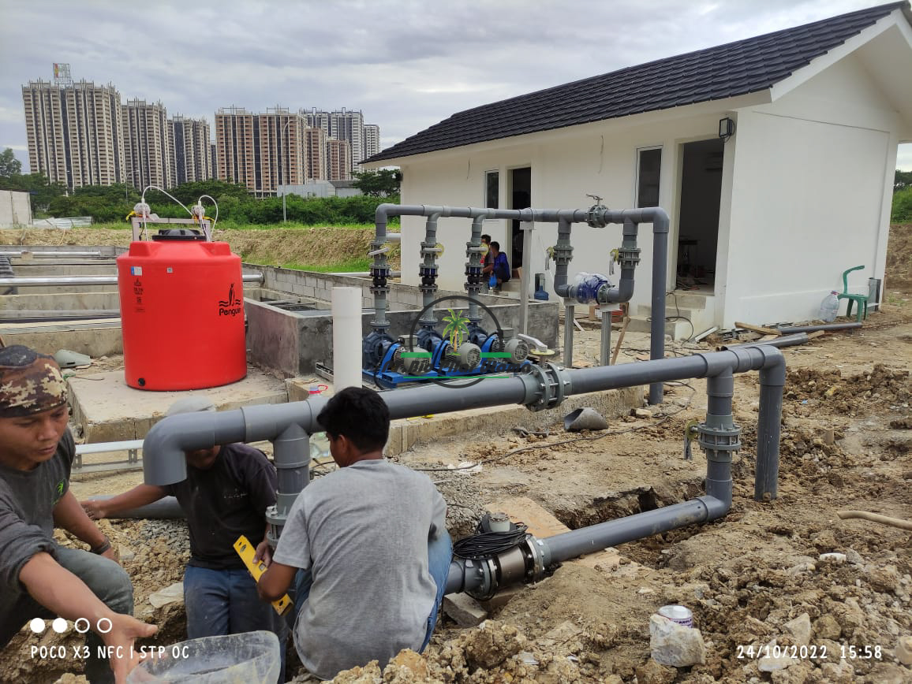
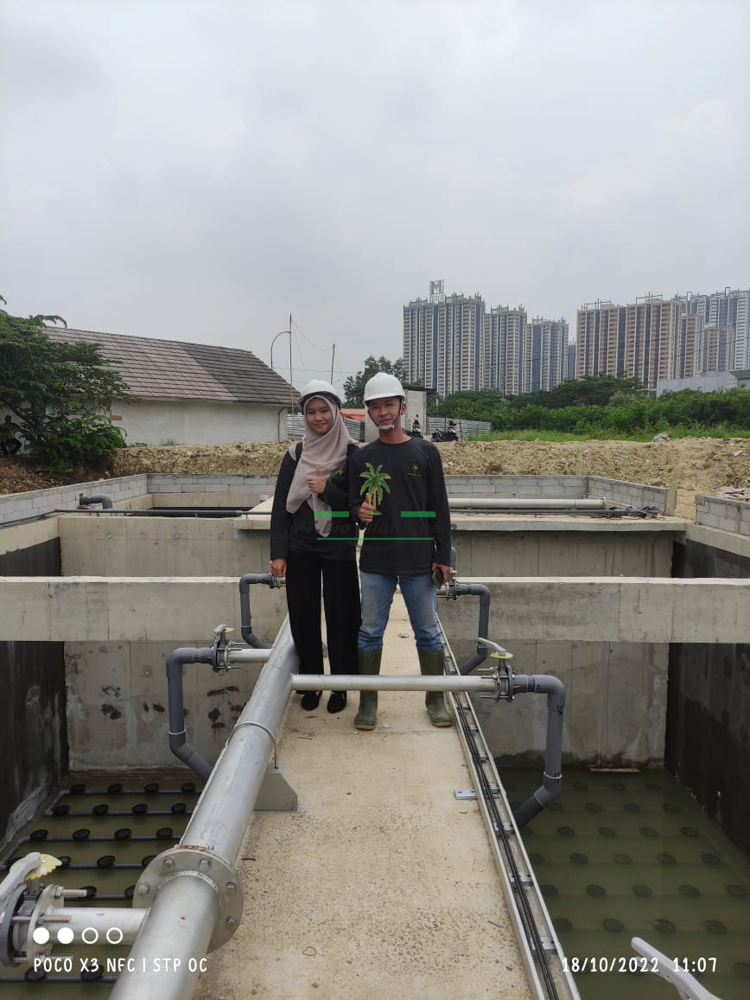

WWTP
Pengertian dan Pentingnya WWTP (Wastewater Treatment Plant)
WWTP (Wastewater Treatment Plant) atau Instalasi Pengolahan Air Limbah adalah fasilitas yang dirancang untuk mengolah air limbah, baik dari rumah tangga, industri, maupun sektor lainnya, menjadi air yang aman untuk dibuang ke lingkungan atau digunakan kembali. Pengolahan air limbah sangat penting untuk menjaga kebersihan lingkungan, kesehatan masyarakat, serta mengurangi dampak negatif terhadap ekosistem.
Tujuan WWTP
Tujuan utama dari WWTP adalah untuk menghilangkan bahan-bahan berbahaya yang ada dalam air limbah, seperti zat kimia beracun, patogen, bahan organik, dan partikel padat. Dengan pengolahan yang tepat, air limbah yang sebelumnya mencemari lingkungan bisa diubah menjadi air yang lebih bersih dan aman.

FUNGSI WWTP
1. Pengurangan Polusi: WWTP membantu mengurangi pencemaran air yang bisa mengganggu ekosistem akuatik dan kualitas air minum.
2. Pengolahan Zat Berbahaya: Menghilangkan bahan kimia berbahaya, logam berat, dan patogen yang bisa membahayakan manusia dan hewan.
3. Recycling Air: Dalam beberapa kasus, air yang telah diproses dapat digunakan kembali untuk keperluan non-potable, seperti irigasi atau proses industri.
4. Pengelolaan Limbah Padat: Selain air, WWTP juga menangani limbah padat yang dihasilkan selama proses pengolahan, seperti lumpur yang harus dikelola lebih lanjut.

Proses Pengolahan di WWTP
Proses pengolahan air limbah di WWTP biasanya dibagi menjadi beberapa tahap, yang masing-masing memiliki fungsi dan tujuan tertentu. Proses tersebut umumnya meliputi:
1. Pengolahan Primer: Pada tahap ini, air limbah disaring untuk menghilangkan partikel besar, seperti sampah, pasir, dan puing-puing lainnya. Selain itu, proses sedimentasi dilakukan untuk memisahkan padatan yang lebih berat dari air.
2. Pengolahan Sekunder: Proses ini bertujuan untuk menghilangkan bahan organik yang masih tersisa. Biasanya dilakukan dengan menggunakan bakteri yang akan menguraikan bahan organik. Pengolahan ini dapat dilakukan dengan metode biologis, seperti reaktor aerasi atau kolam oksidasi.
3. Pengolahan Tersier: Pada tahap ini, air limbah yang telah melalui pengolahan primer dan sekunder akan diproses lebih lanjut untuk menghilangkan zat-zat kimia, mikroorganisme, atau zat berbahaya lainnya. Proses ini bisa melibatkan filtrasi, desinfeksi (misalnya dengan klorin atau UV), atau proses kimia lainnya.
4. Pengolahan Lumpur: Selama proses pengolahan, terbentuk lumpur yang mengandung bahan organik dan padatan lainnya. Lumpur ini harus dikelola dengan cara yang tepat, seperti pemadatan, pengeringan, atau pengolahan lebih lanjut untuk diolah menjadi bahan yang tidak membahayakan.

Jenis-Jenis WWTP
Terdapat beberapa jenis WWTP berdasarkan skala dan teknologi yang digunakan. Beberapa di antaranya adalah:
1. WWTP Skala Industri: Biasanya digunakan untuk mengolah air limbah yang dihasilkan oleh kegiatan industri. Proses pengolahan lebih kompleks karena sifat limbah yang beragam.
2. WWTP Skala Komunal: Biasanya melayani kawasan perumahan atau wilayah tertentu dengan jumlah pengguna tertentu.
3. WWTP Modular: Merupakan sistem pengolahan air limbah yang dapat diadaptasi sesuai kebutuhan, cocok untuk daerah yang membutuhkan fleksibilitas.

Pentingnya WWTP bagi Lingkungan dan Kesehatan
Pengolahan air limbah yang baik memiliki banyak manfaat, di antaranya:
1. Melindungi Kualitas Air: Proses WWTP memastikan bahwa air yang dibuang ke sungai, danau, atau laut tidak mengandung bahan berbahaya yang dapat mencemari sumber air.
2. Menjaga Ekosistem: Dengan mengurangi bahan kimia berbahaya dan patogen, ekosistem perairan dapat tetap terjaga, mendukung kelangsungan hidup berbagai spesies.
3. Meningkatkan Kesehatan Masyarakat: Mengurangi penyebaran penyakit melalui air, yang bisa disebabkan oleh mikroorganisme patogen dalam air limbah yang tidak terolah dengan baik.
4. Mendukung Keterjangkauan Air Bersih: Pengolahan air limbah dapat menjadi sumber air yang berguna untuk keperluan non-potable, membantu menghemat sumber daya air yang terbatas.

STP
Sewage Treatment Plant adalah sistem yang dirancang untuk menghilangkan kontaminan dari air limbah, baik itu air limbah rumah tangga, air limbah industri, atau limbah lainnya. Proses ini bertujuan untuk mengurangi kandungan bahan berbahaya seperti kuman, partikel padat, bahan kimia berbahaya, serta senyawa organik yang dapat mencemari sumber air dan membahayakan kehidupan akuatik.

Proses Pengolahan Air Limbah STP
Sistem pengolahan air limbah biasanya terbagi menjadi tiga tahap utama:
1. Pengolahan Primer (Primary Treatment)
Tahap pertama ini bertujuan untuk menghilangkan partikel padat besar dan material yang dapat mengendap. Dalam proses ini, air limbah biasanya melewati filter atau saringan besar untuk menangkap benda-benda besar seperti daun, plastik, dan bahan padat lainnya. Setelah itu, limbah cair tersebut dibiarkan mengendap di bak pengendapan sehingga partikel-partikel besar bisa mengendap di dasar.
2. Pengolahan Sekunder (Secondary Treatment)
Pada tahap ini, proses biologis digunakan untuk mengurangi bahan organik yang larut dalam air limbah. Mikroorganisme (seperti bakteri) digunakan untuk memecah bahan organik menjadi senyawa yang lebih sederhana. Proses ini sering dilakukan dalam kolam aerasi atau reaktor biologis yang mengandung mikroorganisme yang mengonsumsi zat organik. Hasilnya adalah air limbah yang lebih bersih dengan kandungan zat organik yang jauh lebih rendah.
3. Pengolahan Tersier (Tertiary Treatment)
Tahap ketiga ini adalah tahap penyaringan lebih lanjut untuk menghilangkan kontaminan yang masih ada setelah proses pengolahan sekunder. Pengolahan tersier bisa melibatkan penggunaan bahan kimia untuk menghilangkan nutrisi berlebih (seperti nitrogen dan fosfor), serta penyaringan untuk menghilangkan partikel yang lebih kecil. Pada beberapa sistem, proses ini juga mencakup disinfeksi air dengan menggunakan klorin atau sinar ultraviolet (UV) untuk membunuh bakteri dan patogen yang masih ada.

Pentingnya Sewage Treatment Plant
Pengolahan air limbah yang baik sangat penting karena dampak buruk dari pembuangan air limbah yang tidak terolah dapat merusak lingkungan dan kesehatan manusia. Tanpa pengolahan yang memadai, air limbah dapat menyebabkan:
1. Pencemaran air: Pembuangan limbah yang tidak terolah dapat mencemari sungai, danau, dan perairan lainnya, mengancam kehidupan akuatik, serta mengurangi kualitas sumber air bersih.
2. Penyakit: Air limbah yang mengandung bakteri dan virus dapat menjadi media penyebaran penyakit menular, seperti diare, kolera, atau tifus.
3. Kerusakan ekosistem: Nutrisi berlebih seperti fosfor dan nitrogen dapat menyebabkan eutrofikasi, yaitu perairan menjadi kaya nutrisi yang berlebihan dan menyebabkan pertumbuhan alga yang tidak terkendali, yang dapat mengganggu keseimbangan ekosistem.

Manfaat Sewage Treatment Plant
Sistem pengolahan air limbah biasanya terbagi menjadi tiga tahap utama:
1. Melindungi Kesehatan Masyarakat
Dengan pengolahan air limbah yang tepat, potensi penyebaran penyakit dapat diminimalkan, menjaga kualitas hidup masyarakat sekitar.
2. Meningkatkan Kualitas Lingkungan
STP membantu menjaga kebersihan air permukaan dan mengurangi polusi, yang pada akhirnya menjaga ekosistem perairan tetap sehat.
3. Sumber Daya yang Dapat Digunakan Kembali
Dalam beberapa kasus, air hasil pengolahan sekunder atau tersier dapat digunakan kembali untuk keperluan non-potable seperti irigasi atau pendinginan industri.
4. Pembuangan yang Aman
STP memastikan bahwa air limbah yang dibuang ke lingkungan sudah memenuhi standar kualitas air yang aman, sehingga tidak menimbulkan dampak negatif bagi lingkungan.
PT BIO PILAR UTAMA
Bergerak Dalam Bidang Usaha Yang Sinergis Satu Dengan Yang Lain